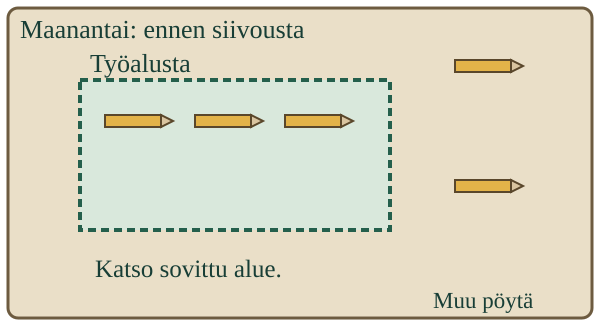

<link rel="stylesheet" href="lesson.css">
<section data-systematic-collection>

<section data-teaching-step="1" data-lesson-role="teaching-step">
<p> Aava ja Loikka haluavat tietää, miten yhteisen työalustan kynämäärä vaihtelee. Yksi vilkaisu silloin tällöin ei riitä sovittujen kertojen vertailuun.</p>
<h2>Sovi tapa. Kirjaa jokainen sovittu kerta.</h2>
<p><strong>Tavoitteesi:</strong> Sovit kysymykseen sopivan keruutavan ja kokoat sen mukaiset havaintotietueet.</p>
<p>Tässä tutkitaan irrallisia kyniä maanantaina, tiistaina ja keskiviikkona piirtämisen lopussa, ennen siivousta. Sovitaan, mikä alue lasketaan ja mitä jokaiselta kerralta kirjataan. Tyhjän taulukkopohjan voi tehdä jo suunnitteluvaiheessa.</p>
</section>


<section data-teaching-step="2" data-lesson-role="teaching-step">
<h3>1. Eri rajaus vastaa eri kysymykseen</h3>
<figure data-lesson-role="worked-example"><figcaption>Työalusta ja koko pöytä ovat eri laskenta-alueita.</figcaption></figure>
<p>Jos maanantaina lasketaan vain alusta ja tiistaina koko pöytä, luvut eivät kuvaa samaa rajattua asiaa. Pelkät lisäpäivät eivät korjaa tätä. Sovitaan alue ja käytetään sitä jokaisella sovitulla kerralla.</p>
</section>


<section data-teaching-step="3" data-lesson-role="teaching-step">
<h3>2. Lintuhavainto ei aina ole uusi lintu</h3>
<p>Lintulaskennassa pitää sopia, kirjataanko käyntikertoja vai samalla hetkellä näkyviä lintuja. Sama lintu voi tulla näkyviin uudelleen. Kaikkien näkymisten yhteenlasku ei silloin kerro eri lintuyksilöiden määrää.</p>
<p>Myöskään pidempi katseluaika ei takaa suurempaa lukua. Voi olla, ettei uusia havaintoja tule. Sama keruutapa voi tuottaa eri kerroilla eri tuloksen.</p>
</section>


<section data-teaching-step="4" data-lesson-role="teaching-step">
<p data-lesson-role="question"><strong>Ennusta:</strong> Yhdeltä sovitulta kerralta ei ole merkintää. Voiko sen ruutuun kirjoittaa automaattisesti 0?</p>
<details data-lesson-role="answer"><summary>Katso ajatus</summary><p>Ei. Nolla on havaittu määrä. Puuttuva merkintä ei kerro, katsottiinko kohdetta lainkaan.</p></details>
</section>


<section data-teaching-step="5" data-lesson-role="teaching-step" data-audience-spacing="compact">
<div data-systematic-practice hidden>
<h3>Suunnittele ja kokoa havaintovihko</h3>

<fieldset data-controls><legend>Keruun suunnitelma</legend><div data-audience-columns><div data-visual-column><p data-study-question></p>
<h3 data-visit-title></h3>
<div data-visit-picture></div>
<details data-lesson-role="hint"><summary>Apua tämän kuvan laskemiseen</summary><p data-count-help></p></details></div><div data-response-column><details data-lesson-role="teaching-step"><p>Kuvat ja niiden tiedot ovat keksittyä harjoitusaineistoa. Voit palata samaan kuvaan ja korjata kirjauksen.</p><summary>1. Sovi keruutapa</summary><label>Laskenta-alue<select data-protocol="area"><option value="">Valitse alue</option><option value="mat">Rajattu työalusta</option><option value="desk">Koko pöytä</option></select></label>
<label>Havaintohetki<select data-protocol="when"><option value="">Valitse hetki</option><option value="before">Piirtämisen lopussa ennen siivousta</option><option value="after">Siivouksen jälkeen</option></select></label>
<label>Havaintokerrat<select data-protocol="visits"><option value="">Valitse kerrat</option><option value="all">Maanantai, tiistai ja keskiviikko</option><option value="one">Vain yksi päivä</option></select></label>
<label>Kirjaustapa<select data-protocol="record"><option value="">Valitse tapa</option><option value="each">Jokaiselle kerralle oma määrä</option><option value="max">Vain kaikkien kertojen suurin määrä</option></select></label>
<button type="button" data-action="protocol">Tarkista suunnitelma</button>
<button type="button" data-action="question">Vaihda tutkimuskysymys</button></details><button type="button" data-action="previous">Edellinen kuva</button>
<button type="button" data-action="next">Seuraava kuva</button>
<label>Tämän kerran havaittu määrä<input data-observed-value type="number" min="0" max="9" step="1" inputmode="numeric"></label>
<button type="button" data-action="record">Kirjaa havainto</button>
<p data-feedback role="status" aria-live="polite">Suunnitelmaa ja kirjauksia voi korjata.</p><details data-lesson-role="teaching-step"><summary>Havaintovihko ja koko keruun tarkistus</summary><div data-notebook></div>
<button type="button" data-action="check">Tarkista keruu</button></details></div></div></fieldset>
</div>
<details data-lesson-role="hint"><summary>Tarvitsen apua</summary><p>Lue kysymys. Mitä, mistä ja milloin haluamme tietää? Tarkista, että suunnitelma vastaa näihin. Kirjaa sitten jokainen sovittu kerta omalle rivilleen, myös tarkistettu nolla.</p></details>
</section>


<section data-teaching-step="6" data-lesson-role="teaching-step">
<section data-lesson-role="question"><h2>Lisäpohdinta</h2><p>Pitääkö paikan aina pysyä samana?</p><details data-lesson-role="answer"><summary>Katso perustelu</summary><p>Ei. Jos kysymys vertaa kahta eri paikkaa, juuri paikkaa muutetaan. Muut keruutavan erot pitää silti huomata. Keruutapa valitaan kysymyksen mukaan.</p></details></section>
</section>

<details data-lesson-role="teacher-note"><summary>Opettajalle ja oikeaan ympäristöön</summary><p>Luokat 3–6. Vaadittu M-DATA-01; M-TH-07 on vahva process_support, ei pakollinen lukko. Kellotaulua ei lueta eikä lukukertojen tahtia arvioida. Pienten määrien laskenta ja lukumerkintä ovat tehtävän tuettuja oletuksia. Aineisto kuvaa irrallisia kyniä, ei lasten suoriutumista. Käyttäkää halutessanne aikuisen ohjauksessa yhteistä turvallista tavara-aluetta ja etukäteen sovittua kirjaustapaa.</p><p>Ruutu tarkistaa suunnitelman ja keksittyihin kuviin perustuvan vihkon johdonmukaisuuden. Se ei todenna fyysistä havainnointia, ajankohdan noudattamista tai itsenäistä tutkimusta. Tuloksia ei yleistetä koko päivään tai muihin paikkoihin. Uusi kirjaus samalle kerralle korvaa vanhan, ei lisää sitä summaan. Tietoja ei tallenneta eikä lähetetä.</p></details>

<section data-teaching-step="7" data-lesson-role="teaching-step">
<p data-lesson-role="question"><strong>Lähtökysymys:</strong> Mitä tietoja tarvitset pelkän havaintoluvun lisäksi, jotta tiedät, mitä se kuvaa?</p>
<details data-lesson-role="answer"><summary>Lähtökysymyksen ajatus</summary><p>Tarvitaan esimerkiksi kohde ja rajaus, havaintokerta ja -hetki sekä tieto siitä, miten luku kerättiin.</p></details>
</section>

</section>
